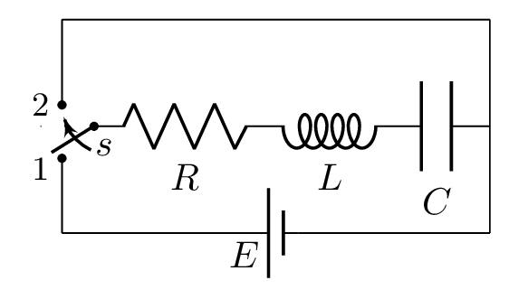
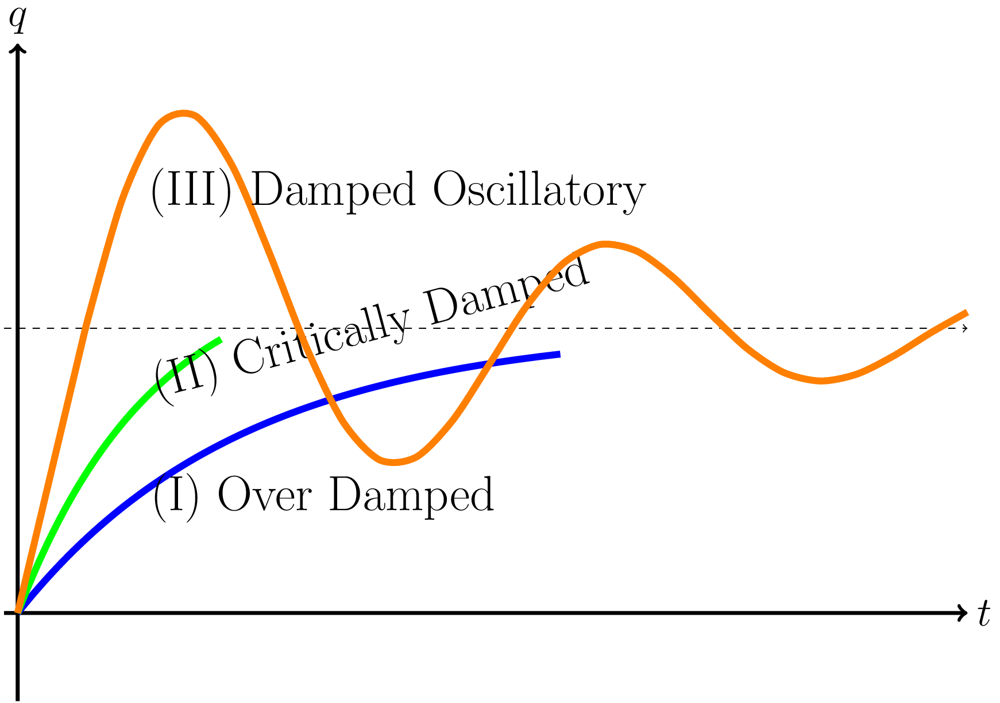
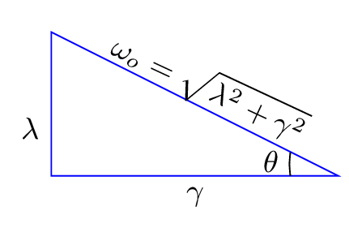
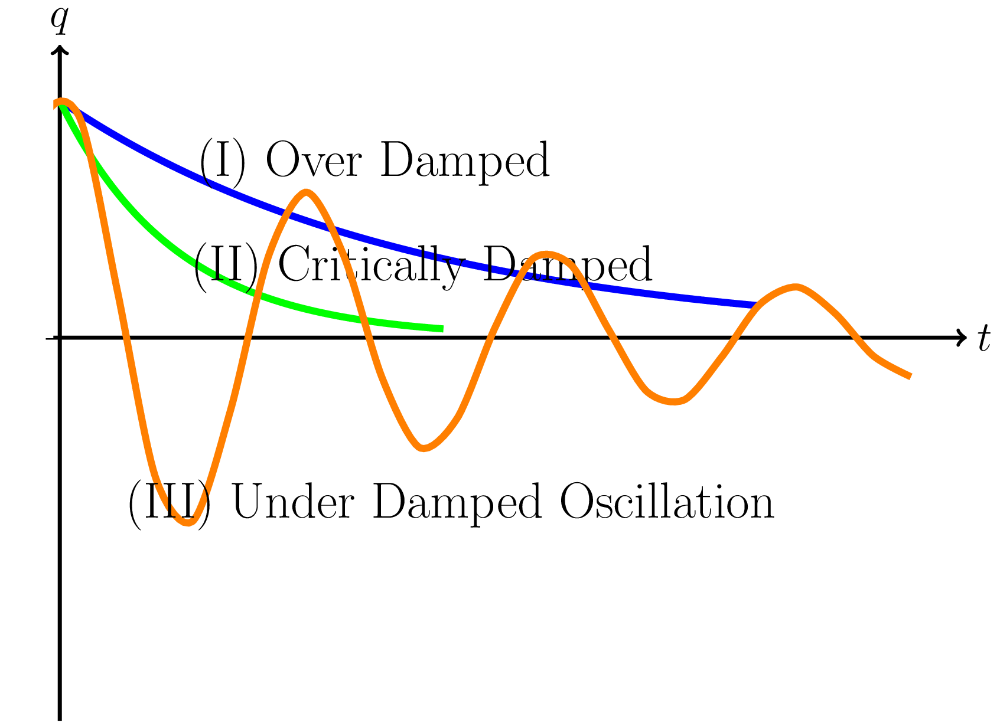

Subsection 3.7.8 L-C-R Circuit

-
Charging of a capacitor In the circuit Figure 3.7.8, when switch is connected to point 1, capacitor starts charging. If i is current initially draws from battery of emf E, then we have -\begin{equation*} V_{E}-V_{L}=V_{R}+V_{C} \end{equation*}\begin{equation*} E-L\frac{\,di}{\,dt} =Ri+\frac{q}{C} \end{equation*}\begin{equation*} \text{or,}\quad L\frac{\,di}{\,dt} + Ri+\frac{q}{C} = E \end{equation*}\begin{equation*} \text{or,}\quad L\frac{\,d^{2}q}{\,dt^{2}} + R\frac{\,dq}{\,dt}+\frac{q}{C} = E \end{equation*}\([\because i=\frac{\,dq}{\,dt}]\)\begin{equation*} \text{or,}\quad \frac{\,d^{2}q}{\,dt^{2}} + \frac{R}{L}\frac{\,dq}{\,dt}+\frac{q}{LC} = \frac{E}{L} \end{equation*}\begin{equation*} \text{or,}\quad \frac{\,d^{2}q}{\,dt^{2}} + 2\lambda\frac{\,dq}{\,dt}+\omega^{2}_{o}q = \frac{E}{L} \end{equation*}where \([\frac{R}{L} = 2\lambda]\) and \([\frac{1}{LC}=\omega^{2}_{o}] \)\begin{equation} \text{or,}\quad \frac{\,d^{2}q}{\,dt^{2}} + 2\lambda\frac{\,dq}{\,dt}+\omega^{2}_{o}\left[q-\frac{E}{L\omega^{2}_{o}}\right] =0 \tag{3.7.9} \end{equation}\begin{equation*} \text{Let}\quad \left[q-\frac{E}{L\omega^{2}_{o}}\right]=x \end{equation*}\begin{equation*} \text{so that}\quad \frac{\,dq}{\,dt} =\frac{\,dx}{\,dt} \end{equation*}\begin{equation*} \text{and}\quad \frac{\,d^{2}q}{\,dt^{2}} =\frac{\,d^{2}x}{\,dt^{2}} \end{equation*}Therefore from eqn. (3.7.9) we have -\begin{equation} \frac{\,d^{2}x}{\,dt^{2}}+2\lambda\frac{\,dx}{\,dt}+\omega^{2}_{o}x =0 \tag{3.7.10} \end{equation}Which is a second order linear differential equation.Let \(x=Ae^{\alpha t}\) be the solution of this equation, so that\begin{equation*} \frac{\,dx}{\,dt} = A\alpha e^{\alpha t} \end{equation*}\begin{equation*} \text{and}\quad \frac{\,d^{2}x}{\,dt^{2}} = A\alpha^{2} e^{\alpha t} \end{equation*}\begin{equation*} \therefore\quad A\alpha^{2} e^{\alpha t}+2\lambda A\alpha e^{\alpha t} + \omega^{2}_{o} Ae^{\alpha t} =0 \end{equation*}\begin{equation*} \text{or,}\quad Ae^{\alpha t}\left( \alpha^{2} +2\lambda \alpha + \omega^{2}_{o}\right) =0 \end{equation*}Since, \(Ae^{\alpha t} \neq 0, \)\begin{equation*} \text{we have}\quad \left( \alpha^{2} +2\lambda \alpha + \omega^{2}_{o}\right) =0 \end{equation*}\begin{equation*} \text{or,}\quad \alpha = \frac{-\lambda\pm\sqrt{4\lambda^{2}-4\omega^{2}_{o}}}{2} =-\lambda\pm\sqrt{\lambda^{2}-\omega^{2}_{o}} \end{equation*}\begin{equation*} \therefore\quad \alpha = -\lambda \pm \beta, \end{equation*}\begin{equation*} \text{where}\quad \beta = \sqrt{\lambda^{2}-\omega^{2}_{o}} \end{equation*}Hence the most general solution of eqn. (3.7.10) is\begin{equation*} x= A e^{\alpha t} + B e^{-\alpha t} = A e^{(-\lambda + \beta) t} + B e^{(-\lambda - \beta) t} \end{equation*}where A and B are constants and can be determined by initial conditions.\begin{equation} \therefore\quad q= x+\frac{E}{L\omega^{2}_{o}} = A e^{(-\lambda + \beta) t} + B e^{(-\lambda - \beta) t} + q_{o}\tag{3.7.11} \end{equation}\([\because \quad \frac{E}{L\omega^{2}_{o}} =\frac{E}{L\frac{1}{LC}} = CE=q_{o}] \) where \(q_{o}\) is the final charge in the capacitor.Now at t=0, q =0, hence\begin{equation*} 0=q_{o}+A+B \end{equation*}\begin{equation} \text{or,}\quad A+B=-q_{o} \tag{3.7.12} \end{equation}Also differentiating eqn. (3.7.11) we get -\begin{equation*} i=\frac{\,dq}{\,dt} = A[-\lambda+\beta]e^{(-\lambda + \beta) t} +B[-\lambda-\beta]e^{(-\lambda - \beta) t} \end{equation*}Now the initial condition as t=0,i=o, we get -\begin{equation*} 0=A[-\lambda+\beta]+B[-\lambda-\beta] \end{equation*}\begin{equation*} \text{or,}\quad 0=-\lambda (A+B) +\beta (A-B) = \lambda q_{o} +\beta (A-B) \end{equation*}\([\because A+B=-q_{o}]\)\begin{equation} \therefore\quad A-B = \frac{-\lambda q_{o}}{\beta} \tag{3.7.13} \end{equation}\begin{equation*} A = -\frac{q_{o}}{2}\left(1+\frac{\lambda}{\beta}\right) \end{equation*}\begin{equation*} \text{and}\quad B = -\frac{q_{o}}{2}\left(1-\frac{\lambda}{\beta}\right) \end{equation*}Hence from eqn. (3.7.11) we get -\begin{equation} q = q_{o} -\frac{q_{o}}{2}\left(1+\frac{\lambda}{\beta}\right) e^{(-\lambda + \beta) t} -\frac{q_{o}}{2}\left(1-\frac{\lambda}{\beta}\right) e^{(-\lambda - \beta) t} \tag{3.7.14} \end{equation}Now charging of the capacitor depends upon the following three cases of \(\lambda^{2} \gt, =, \lt \omega^{2}_{o}\text{.}\)
 (a)  (b) Figure 3.7.9. Case I: If \(\lambda^{2} \gt \omega^{2}_{o},\) then \(\beta\) is real hence both the exponential terms in eqn. (3.7.14) become real and the charge gradually acquires its final value \(q_{o}\) as shown by curve I in the Figure 3.7.9.(a).Case II: If \(\lambda^{2} = \omega^{2}_{o},\) then \(\beta \) is zero hence both the coefficients of exponential terms in eqn. (3.7.14) become infinite and hence from eqn. (3.7.11) assume that \(\beta\) to be very small, then\begin{equation*} q=q_{o}+Ae^{(-\lambda+\beta)t}+Be^{(-\lambda-\beta)t}= q_{o}+e^{-\lambda t}\left[Ae^{\beta t}+Be^{-\beta t}\right] \end{equation*}\begin{equation*} \text{or,}\quad q = q_{o}+e^{-\lambda t}\left[A(1+\beta t+\cdots)+B(1-\beta t+\cdots)\right] \end{equation*}\begin{equation*} \text{or,}\quad q = q_{o}+e^{-\lambda t}\left[(A+B)+\beta (A-B)t\right] \end{equation*}\begin{equation} \text{or,}\quad q = q_{o}+e^{-\lambda t}\left[P+Q t\right]\tag{3.7.15} \end{equation}where \([P=(A+B)\) and \(Q=\beta (A-B)]. \)\begin{equation*} i=\frac{\,dq}{\,dt}=-\lambda e^{-\lambda t}\left[P+Q t\right]+e^{-\lambda t}Q \end{equation*}Now i=0 at t=0, we get -\begin{equation*} 0=-\lambda P+Q=\lambda q_{o}+Q \end{equation*}\begin{equation*} \therefore\quad Q=-\lambda q_{o} \end{equation*}Substituting these values in eqn. (3.7.15), we egt -\begin{equation*} q=q_{o}+e^{-\lambda t}\left(-q_{o}-\lambda q_{o}t\right) \end{equation*}\begin{equation*} \text{or,}\quad q=q_{o}-q_{o}\left(1+\lambda t\right) e^{-\lambda t} \end{equation*}i.e., the charge gradually increases with time as shown by curve II in the Figure 3.7.9.(a).Case III: If \(\lambda^{2} \lt \omega^{2}_{o},\) then \(\beta\) is imaginary. Let us put\begin{equation*} \beta = \sqrt{(\lambda^{2}-\omega^{2}_{o})}=j\sqrt{(\omega^{2}_{o}-\lambda^{2})}=j\gamma \end{equation*}where\begin{equation*} \gamma = \sqrt{(\omega^{2}_{o}-\lambda^{2})}. \end{equation*}Hence, from eqn. (3.7.14), we have\begin{equation*} q= q_{o}-\frac{q_{o}}{2}\left(1+\frac{\lambda}{j\gamma}\right) e^{(-\lambda +j\gamma)t} - \frac{q_{o}}{2}\left(1-\frac{\lambda}{j\gamma}\right) e^{(-\lambda -j\gamma)t} \end{equation*}\begin{equation*} \text{or,}\quad q = q_{o}-\frac{q_{o}}{2}e^{-\lambda t}\left(e^{j\gamma t} +\frac{\lambda}{j\gamma} e^{j\gamma t}+ e^{-j\gamma t}- \frac{\lambda}{j\gamma} e^{-j\gamma t}\right) \end{equation*}\begin{equation*} \text{or,}\quad q = q_{o}-q_{o}e^{-\lambda t}\left(\frac{e^{j\gamma t}+e^{-j\gamma t}}{2} + \frac{\lambda}{\gamma} \frac{e^{j\gamma t}-e^{-j\gamma t}}{2j} \right) \end{equation*}\begin{equation*} \therefore\quad q = q_{o}-q_{o}e^{-\lambda t}\left(\cos\gamma t+ \frac{\lambda}{\gamma} \sin\gamma t\right) \end{equation*}Let us put \(\frac{\lambda}{\gamma} = \tan\theta\) where \(\theta\) is a new constant so that \(\sin\theta=\frac{\lambda}{\omega_{o}}\) and \(\cos\theta=\frac{\gamma}{\omega_{o}}.\) as shown in Figure 3.7.9.(b). Hence from the above equation\begin{equation*} q= q_{o}-q_{o}e^{-\lambda t}\left(\cos\gamma t+\tan\theta\sin\gamma t\right) \end{equation*}\begin{equation*} = q_{o}-q_{o}\frac{e^{-\lambda t}}{\cos\theta}\left(\cos\theta\cos\gamma t+\sin\theta\sin\gamma t\right) \end{equation*}\begin{equation*} \therefore\quad q= q_{o}-q_{o}\frac{\omega_{o} e^{-\lambda t}}{\gamma} \cos\left(\gamma t-\theta \right) \end{equation*}Thus in this case the charge is damped oscillatory as shown by curve III in Figure 3.7.9.(a). The current in this case is given by\begin{equation*} i=\frac{\,dq}{\,dt} = q_{o}\omega_{o}e^{-\lambda t}\sin(\gamma t - \theta) +q_{o}\frac{\omega_{o}\lambda e^{-\lambda t}}{\gamma} \cos\left(\gamma t-\theta \right) \end{equation*}\begin{equation*} \text{or,}\quad i=q_{o}\frac{\omega_{o} e^{-\lambda t}}{\gamma}\left[\gamma\sin(\gamma t-\theta)+\lambda\cos(\gamma t-\theta)\right] \end{equation*}\begin{equation*} \text{or,}\quad i=q_{o}\frac{\omega^{2}_{o} e^{-\lambda t}}{\gamma}\left[\frac{\gamma}{\omega_{o}}\sin(\gamma t-\theta) +\frac{\lambda}{\omega_{o}}\cos(\gamma t-\theta)\right] \end{equation*}\begin{equation*} \text{or,}\quad i=q_{o}\frac{\omega^{2}_{o} e^{-\lambda t}}{\gamma}\left[\cos\theta\sin(\gamma t-\theta) +\sin\theta\cos(\gamma t-\theta)\right] \end{equation*}\begin{equation*} \therefore\quad i= q_{o}\frac{\omega^{2}_{o} e^{-\lambda t}}{\gamma}\sin\gamma t \end{equation*}i.e., current is also damped oscillatory. -
Discharging of a capacitor When circuit is connected to point 2 capacitor begins discharging through the inductor and resistor. Hence\begin{equation*} \frac{q}{C}+L\frac{\,di}{\,dt}+Ri=0 \end{equation*}Since \(i=\pm \frac{\,dq}{\,dt}\) and during discharging \(\,dq \) is decreasing or \(\,dq\) is negative, Therefore \(i=\frac{\,dq}{\,dt}\text{.}\)\begin{equation*} \text{or,}\quad L\frac{\,d^{2}q}{\,dt^{2}}+R\frac{\,dq}{\,dt}+\frac{q}{C} =0 \end{equation*}\begin{equation*} \text{or,}\quad \frac{\,d^{2}q}{\,dt^{2}}+\frac{R}{L}\frac{\,dq}{\,dt}+\frac{q}{LC} =0 \end{equation*}\begin{equation} \text{or,}\quad \frac{\,d^{2}q}{\,dt^{2}}+2\lambda\frac{\,dq}{\,dt}+\omega^{2}_{o}q =0\tag{3.7.16} \end{equation}where \([\frac{R}{L} = 2\lambda \) and \(\frac{1}{LC}=\omega^{2}_{o}] \) If \(q=Ae^{\alpha t}\) be the trial solution of eqn. (3.7.16) then this equation becomes\begin{equation*} \alpha^{2}+2\lambda \alpha +\omega^{2}_{o} =0 \end{equation*}\begin{equation} \text{or,}\quad \alpha = -\lambda \pm \sqrt{(\lambda^{2}-\omega^{2}_{o})} = -\lambda \pm \beta \tag{3.7.17} \end{equation}The general solution of eqn. (3.7.17) is given by\begin{equation*} q=Ae^{(-\lambda+\beta t)}+B e^{(-\lambda-\beta t)} \end{equation*}\begin{equation} q=e^{-\lambda t}\left(Ae^{\beta t}+B e^{-\beta t}\right) \tag{3.7.18} \end{equation}According to initial condition, when t=0, \(q=q_{o}\text{,}\) maximum value.\begin{equation*} \therefore\quad A+B = q_{o} \end{equation*}Differentiating eqn.(3.7.18), we get -\begin{equation*} i=\frac{\,dq}{\,dt} = -\lambda e^{-\lambda t}\left(Ae^{\beta t}+B e^{-\beta t}\right)+e^{-\lambda t}\left(A\beta e^{-\beta t} -B \beta e^{-\beta t}\right) \end{equation*}At i=0, \(\frac{\,dq}{\,dt} =0.\)\begin{equation*} \beta(A-B)-\lambda(A+B)=0. \end{equation*}\begin{equation*} \therefore\quad A-B = \frac{\lambda(A+B)}{\beta} = \frac{\lambda q_{o}}{\beta} \end{equation*}Hence\begin{equation*} A = \frac{q_{o}}{2}\left[1+\frac{\lambda}{\beta}\right] \end{equation*}and\begin{equation*} B = \frac{q_{o}}{2}\left[1-\frac{\lambda}{\beta}\right] \end{equation*}Therefore eqn. (3.7.18) becomes -\begin{equation*} q=\frac{q_{o}}{2}\left\{\left(1+\frac{\lambda}{\sqrt{\lambda^{2}-\omega^{2}_{o}}}\right)e^{-\lambda+\sqrt{(\lambda^{2}-\omega^{2}_{o})}t} + \left(1-\frac{\lambda}{\sqrt{\lambda^{2}-\omega^{2}_{o}}}\right)e^{-\lambda-\sqrt{(\lambda^{2}-\omega^{2}_{o})}t}\right\} \end{equation*}\begin{equation} \therefore\quad q= \frac{q_{o}}{2}e^{-\lambda t}\left\{\left(1+\frac{\lambda}{\sqrt{\lambda^{2}-\omega^{2}_{o}}}\right)e^{\sqrt{(\lambda^{2} -\omega^{2}_{o})}t}+ \left(1-\frac{\lambda}{\sqrt{\lambda^{2}-\omega^{2}_{o}}}\right)e^{-\sqrt{(\lambda^{2}-\omega^{2}_{o})}t}\right\} \tag{3.7.19} \end{equation}Depending upon the relative value of \(\lambda\text{,}\) there arises three cases -Case I: When \(\lambda^{2} \gt \omega^{2}_{o}\text{,}\) we get overdamped discharge. In this case exponential terms become negative and hence charge decreases exponentially with time and finally becomes zero.Case II: When \(\lambda^{2}=\omega^{2}_{o}\text{,}\) we get critically damped discharge. In this case two values of \(\alpha\) become identical and after using the initial condition\begin{equation*} q=q_{o}e^{-\lambda t}(1+\lambda t) \end{equation*}Here charge becomes to zero without oscillation in least amount of time.Case III: When \(\lambda^{2} \lt \omega^{2}_{o}\text{,}\) we get under damped discharge. Since \(\sqrt{\lambda^{2}-\omega^{2}_{o}}\) is imaginary.\begin{equation*} \text{or,}\quad \sqrt{\lambda^{2}-\omega^{2}_{o}} =j\gamma \end{equation*}\begin{equation*} \text{where}\quad \gamma = \sqrt{\omega^{2}_{o}-\lambda^{2}} \end{equation*}Hence from eqn. (3.7.19),\begin{equation*} q=\frac{q_{o}}{2}e^{-\lambda t}\left[\left(1+\frac{\lambda}{j\gamma}\right)e^{j\gamma t}+\left(1-\frac{\lambda}{j\gamma}\right)e^{-j\gamma t}\right] \end{equation*}\begin{equation*} \text{or,}\quad q=q_{o}e^{-\lambda t}\left[\left(\frac{e^{j\gamma t}+e^{-j\gamma t}}{2}\right)+\frac{\lambda}{\gamma}\left(\frac{e^{j\gamma t}-e^{-j\gamma t}}{2j}\right)\right] \end{equation*}
Figure 3.7.10. \begin{equation*} \text{or,}\quad q= q_{o}e^{-\lambda t}\left[\cos\gamma t+\frac{\lambda}{\gamma}\sin\gamma t\right] \end{equation*}\begin{equation*} \text{or,}\quad q= \frac{q_{o}\omega_{o}e^{-\lambda t}}{\gamma}\left[\frac{\gamma}{\omega_{o}}\cos\gamma t+\frac{\lambda}{\omega_{o}}\sin\gamma t\right] \end{equation*}\begin{equation*} \text{or,}\quad q= \frac{q_{o}\omega_{o}e^{-\lambda t}}{\gamma}\left[\cos\phi\cos\gamma t+\sin\phi\sin\gamma t\right] \end{equation*}see Figure 3.7.9.(b).\begin{equation*} \therefore \quad q= \frac{q_{o}\omega_{o}e^{-\lambda t}}{\gamma}\sin(\gamma t+\phi) \end{equation*}This is the equation for damped oscillation, where \(\gamma\) is an angular frequency of the discharge.